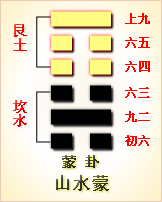
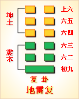
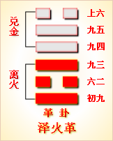
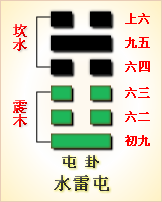

高岛易断 - 07地水师
高岛易断 07 地水师
"师
［42］
"篆书左旁为阜；右旁为巾。巾上加一者，为能一人指挥众人也。《师》承《讼》来，《讼》必有众，《师》者，众也，故《师》继夫《讼》。顾《师》有二义，一为教导子弟，一为统领军旅，是皆有率众之象。以九二为成卦之主，统率五阴而济坎险。《坤》上《坎》下，地中有水，水依地而安居，地得水而滋润，生育万物，相助为功。水土之性，原来相亲，此卦水在地下，是至险起于至顺之下，为聚众据险，扰乱不定之象。《师》者，以一人统众而平定之也。盖未乱之先，以师道训导之，格其非心，可戡乱于未形。既乱，则统师旅以征伐之，枭其元恶，可戡乱于方作，皆为师也。此卦初爻，柔而不得其正，为起难之首；二爻在险难之中，能率众以平难，故为一卦之主。
师：贞，大人吉，无咎。
▲ 金文师
▲ 篆书师
爻辞皆系以军旅之义，故《彖辞》亦从之，读者当以类推。夫军旅者，起大众，动干戈，伤人命，糜国帑，国家不得已而用之也。其得已而兴者，是谓穷兵黩武，无道之甚者也，故戒之曰"师贞"。"贞"者，正也，谓师道而以正为本也。兴师动众，以毒天下，苟不以正，民不从也。"大人"，坊本误作"丈人"，独《子夏传》作"大人"，与《困》卦《彖辞》同。以大人为元帅，谓必能拨乱反正，除暴安民者也，故曰"大人吉"。兵者凶器，战者危事，本属有咎，"大人"者，应天顺民，为天下除暴，是王者之师也，纵有杀伤，亦无害天地生生之道，故吉而无咎。
《彖传》曰：师，众也，贞，正也，能以众正，可以王矣。刚中而应，行险而顺，以此毒天下，而民从之，吉，又何咎矣。
"以"，《春秋传》："能左右之曰以"，以犹用也。元帅能以严正而用众，可谓王者之师矣。"刚中"者，谓一阳居内卦之中，上应六五之君。内卦《坎》为险，外卦《坤》为顺，故曰"行险而顺"。"毒"，马云"治也"，王云"役也"，又古毒育二字，音义通，亦作育解，盖谓以此治天下，以此役天下，于义均顺。汉儒释毒为害，是以此害天下，民必不从，何以能王？若谓以民治乱，犹以毒药攻疡，说之牵强。夫众以正举，民以顺从，顺则获吉，正则复有何咎？"吉"者主事而言，"无咎"者主理而言也。
以此卦拟人事，则《坎》为中男，宜在外而在内，《坤》为老阴，宜居内而在外，母子位置，颠倒失伦，不安之象，是必启家乱也。当于家长内得刚中者，以贞正而治之，斯家道齐矣。
以此卦拟国家，上卦为政府，得《坤》之顺，阴弱而少威严，不能箝制下民；下卦为人民，得《坎》之险，阴险而好生事，动欲上抗政府，譬如水在地下，泛滥无归，有聚众据险，扰乱不顺之象。此卦五爻皆阴，惟九二独秉阳刚，当以九二受六五之君命，膺元帅之专任，率众兴师。以此毒天下，谓之"刚中而应，行险而顺"，"而民从之，吉，又何咎矣"。
通观此卦，九二为元帅，五阴从之。初六为师众，九二为主帅，六三六四为褊裨，六五为临敌，上六为赏功之时。又以内外卦见之，九二为将帅，六五为君主，将帅承君命而出征，所谓"礼乐征伐，出白天子"。将帅者，佐主成王，相与有成者也。故"能以众正"者，属九二之将帅言之；"可以王矣"，属六五之君言之也。
《屯》以下六卦，皆圣人济险之业，天下之事，未有不先难者也。《序卦》曰："《讼》者必有众，《师》者，众也，故受之以《师》。"以《坤》众，《履》坎险，即兵凶之象，九二一阳率五阴，行师之象。人或曰《师》《比》两卦，均是地水相遇，而爻象大异者，何也？曰：《比》者一阳在上，是人君居尊临下者也；《师》者一阳在下，是人臣奉命出征者也。《坤》卦曰战，而此曰《师》者何也？《师》者民也，国以民为本。天道好生而不杀，圣人容保如伤，然欲恶形而相岐，五兵作而相戕，是天地之闰数，不得已而用之者也。故卫灵公问陈，孔子不对，子路问子行三军则谁与，曰"必也临事而惧，好谋而成"。曰"惧"，曰"好谋"，何等郑重！知圣人未尝轻言兴师也。此卦九二为刚中之贤将，六三贪功而取败，六四无功而守常，六五为君任将不专，挠权偾事，是卦可备观军旅之情形矣。大抵三军和，将帅贤，褊裨奉令，委任专一，班师行赏，崇德报功，是帝王之举也。要旨所归，全在"容民畜众"，以六爻不取全胜，其义可知也。
《大象》曰：地中有水，师。君子以容民畜众。
《坎》在《坤》内，故曰"地中有水"，水藏地中，无地非水，犹兵藏民中，无民非兵。藏兵于民，有兵之利，无兵之害，犹水藏于地，有水之利，无水之害也。"水在地中"，显见地能包水，有容民畜众之象。又《坤》为民，《坎》为众，"容"者，保也，"畜"者，养也，兼养育教化之义。九二将帅，德量宏大，能包容亿兆，养育众庶，故无事之日，散兵为农，有事之日，集农为兵。其不曰治民，而曰"容民"者，治之则尚严，容之则尚宽也；其不曰动众，而曰"畜众"者，动之则劳，畜之则在逸也。所谓兵可百年不用，不可一日不备，"容民畜众"，盖讲兵于平时之道也。师旅本残民害众之事，然圣人取象，曰"容民畜众"，不杀为武之意，即此可知矣。
【占】 问战征：卦以《师》名，爻义甚明，可就各爻推究，吉凶自验。
○ 问营商：《坤》为财，为聚，《坎》为人，为纳，自有容保之量。坎水在地中，为地所包容，财源如水，流而不息，可知商业之富有也。吉。
○ 问功名：水在地中，犹士尚伏处，未显达也，而其德量，自能包容民物，一经进用，如水之朝宗于海，敷施甚广。"君子"者，有德有位之称也。吉。
○ 问婚嫁：按《坤》《坎》互用，地水相亲，是必旧亲联姻也。大吉。
○ 问疾病：是必水满腹胀之症。《坎》为心，为忧，宜息心调气，解忧取乐，自愈。
○ 问六甲：生男。
高岛易断 初六：师出以律，否臧凶。
《象传》曰：师出以律，失律凶也。
此卦内《坎》外《坤》，自内而外曰出。"以"，犹用也。《坎》为律，"律"法律，即号令节制之谓也。初为爻之始，即为出师之始。所谓临事而惧，言当谨其始也。师旅之事，率大众而临危地，国家之存亡，人民之安危系焉，苟纪律不严，人心不协，三军覆败，凶莫大矣。"否"，不也；"减"，善也，与《诗"·卫风》"何用不臧"同训。盖"师出以律"，胜负尚未可预决，故不言吉；至不善用其律，则陷于危险，势必凶矣。《象传》曰"失律凶也"，"否臧"即失律之谓也。一说否，塞也，谓军心隔塞，不得和协；臧藏古字通用，臧即藏字，谓深臧不发，是畏敌也，即使纪律严明，亦必取败。况"否臧"者，必不能"以律"，其凶必矣。此说亦通。
此爻居坎险之始，故以失律为戒，所谓"作事谋始"也。此爻内卦变则为《兑》，坎水变而为泽，停止而不流，是纪律不行之象。
【占】 问功名：初爻者，初出而求名也。"出师以律"为正，犹士之以道为重，失其道，虽荣终辱，凶。
○ 问营商：初爻，知为新立之业，水在地中，知为海运商务。总之谋利以义者吉，失义为凶。
○ 问家宅：《师》卦内《坎》外《坤》，是宅必坐子兼丑，向午未也。宅中人口最多。出师有律，犹言治家当以法也。否不也，减善也，不善治家，家道必凶。
○ 问疾病：《师》卦一阳五阴，是必寒多热少。症在初起，宜延良医调治，否则凶。
【例】 或人以有组织工业会社，募集株金，设定款，请占其社之成否。筮得《师》之《临》。
断曰：此卦九二，一阳统众阴，是必有刚健之人为社长，指挥众人之象。今定款既完全无间，即见规律整肃也。然依此爻辞，此社之盛衰，全在作事之纪律。我国方今集合株金兴会社者，皆以欧美各邦为模范，欧美各邦舟车之便，非本邦之比，是以贩运各种货物，最为适当。凡合众资，购备器械，人力既省，制费亦廉，大得胜利，至于小本营生，独立工业者，无不取败。今我国仿之，欲设立会社，然集合众资，询非易易，且役员从事营业，亦难得其人。故立会社，第一在社长得人，社长得人，则事可成，业可兴；不得其人，即成亦败。今初爻居事之始，未可以定款判吉凶，必俟社长选举既定，方可卜工业之兴废也。
高岛易断 九二：在师中，吉，无咎。王三锡命。
《象传》曰：在师中吉，承天宠也。王三锡命，怀万邦也。
《师》卦，九二为五爻正应，以一阳为众阴所归，乃师中之主将，得专主战伐之权。"在师中"者，谓居军阵之中，又得中正之道；"王三赐命"者，命者恩命，谓邀荷宠遇也。"三"者，言宠赐之频也。此爻以阳居阴，在《师》之中，当互卦《震》之主爻，为居将帅之位。《坎》为智，《震》为勇，以阳爻之德居中，智勇兼备，威信并行，洵足膺元帅之任，即《彖辞》所称"大人"者是也。承六五之君命，统率师众，且得六三之同僚比亲之，初六之众庶比顺之，上下咸相比应，并为参谋，所谓战必克，攻必胜者，惟在此九二之师也。六五之君，倚任既专，宠赐又厚，九二自得专制其权，所谓阃外之事，一以委卿者。其任既隆，其令必行，故成功也易。古来权臣在内，即有坤岳之将，未能克敌者，皆由信任之不专故也。此爻曰"王三赐命"，可见任之专，宠之渥也。《象》曰"承天宠也"，"天"即王也，王而曰天，可知王之明于任贤。《象》曰"怀万邦也"，谓王之所赐命，不在用威，而在用怀，即怀保万民之意也。
此爻变则全卦为《坤》，去坎险，就坤顺，有拨乱反正之象。《地水师》忽变《坤为地》，有拓地开疆之象，此爻为成卦之主，故以《彖》辞"吉无咎"属之也。
【占】 问功名：九二以一阳统率五阴，爻曰"在师中，吉"，是鸡群一鹤，杰出之才也。"王三赐命"，谓以能授爵，显膺王命也。
○ 问营商：九二为一卦之主，必其人谋为出众，在商务中称为老成练达，可举为商社之长者也。吉。
○ 问家宅：曰"师中吉"，是家必为一乡之巨室，即为一乡之善士也。
○ 问婚姻：九二变为《坤》，坤地道也，妻道也，水土之性相合，故吉。
○ 问疾病：知为水气停积中宫，必使水气流动，中焦宽舒，病无害也。吉。
○ 问六甲：生男。
【例】 明治二十五年十二月，占第五议会，筮得《师》之《坤》。
断曰：此卦九二以一阳统五阴，以人事拟之，则阳刚之教师，教导众阴之子弟，故名此卦曰《师》。以国家拟之，九二为阳刚大臣，入则为相，出则为将，国家有事，则受王命以专征伐，权无旁落，威信并行，谓之"师众也，贞，正也，能以众正，可以王矣"。《易》六十四卦，三百八十四爻中，教导人民，用其威严，保有国家，惟此一爻而已。天命所归，宜上承君令，下顺民心，正大人致身报国之时也。今筮议会，得此爻辞，亦当上承君令，下顺民心，斯议得其中矣。若其议上不能见信于君，下不能见信于民，议必不能行也。
翌二十六年十二月，议会使议长退，是二爻阳变为阴，再次有停止之命；至三次，遂有解散之命，果符此"王三赐命，怀万邦也"之占。呜呼！天命之严确如此，可不畏敬乎！
高岛易断 六三：师或舆尸，凶。
《象传》曰：师或舆尸，大无功也。
"舆尸"者，谓军败而战死者多，载尸于车而归也。此爻内卦变则为《巽》，《巽》为进退，有疑之象，故曰"或"。古语曰，三军之灾，生于狐疑，疑者行军之所大戒也。六三以阴居阳，不中不正，进而无所应，退而无所守，居内卦之极，对外卦之敌，正当交锋接刃之际也。三以柔居刚，如小人之才弱志刚者，窃二之权，而恃强妄进，遂致失律丧师，舆尸而归，谓之"师或舆尸，凶"。《象传》曰"大无功也"，犹曰大败也。军旅之事，信任宜专，二为主帅，三为偏稗，偏稗擅权致败，主帅亦不能辞咎，故曰'大无功也"。如城濮之战，左师右师败，子玉不败，然子玉帅也，故败师之罪，子玉不免。盖以全卦言之，六爻皆师徒也，独以三言，内卦为先锋，外卦为敌，外卦《坤》为众，敌兵众多也。至四则又以五上为敌；五君位而非敌，是卦爻之变例也。《易》之取象，概如此，学者不可不知。
【占】 问商业：《坎》为舆，舆所以载货物也；《坎》又为陷，为破，舆而遇隘，则舆破而货覆矣。人死谓尸，犹车败物亡也。"或"者未然之辞，"大无功"者，大失利也。行商未必遇此凶险，亦不可不防此凶险也。爻象戒之如此。
○ 问功名："君子得舆"，得为德，舆所以载德而行也。君子有德位之称。或曰，"舆尸"是无德而尸位者也，故凶。
○ 问家宅：阴阳家称堪舆，堪天也，舆地也，舆尸是地有尸气，安得不凶！
○ 问婚嫁：三爻居《坎》之终，得乾气，《乾》下《巽》上为《小畜》，《小畜》三爻曰"舆脱辐，夫妻反目"，《象》曰"不能正室"，其凶可知。
○ 问六甲：虽生男，凶。
【例】 明治三年，横滨商人三名，搭载舶来物品于蒸气船，贩赴箱馆。适际舶来物品匮乏，获利三倍，因再购巨额物品，将往得大利。其一人某氏来请占《损》《益》，筮得《师》之《升》。
断曰：此卦有自水上投土之象，例之商业，其目的未定，混杂不可言也。况今得三爻，足下等以廉价购入目下在东京横滨不通销物品，贩卖于边鄙之地，将得大利。在他商闻之，亦谋置各种物品，多欲争著先鞭。然此不适时之物品，当众人竞争贩运，转必抬价，至箱馆各自竞卖，已为彼地商人所料。将来货到不售，势必跌价，极之贱亦不售，则必转运而归。往复装运，费耗殊大，及至售得，不特无利，反致伤本。其舆物而返，恰如载尸而归也，故不如止。
某氏闻之，大感，遂止北地之行，后果如此占。他商人赴箱馆者，皆多损失。
高岛易断 六四：师左
［43］
次，无咎。
《象传》曰：左次，无咎，未失常也。
左者右之对，不用之地。人手右为便，左为僻，故称不正之术，曰左道，称谪官曰左迁，划策不适，曰左计。"左次"者，谓退舍也。左氏曰"不进曰次"，又曰"凡军三宿为次"，又《易》阳为右，阴为左，六四以爻位俱阴曰左。此爻阴柔而不中，志弱而不能克敌者也。自知不能克敌，量宜而退，克保全师，愈于三爻之覆败者远矣，故"无咎"也。《象传》曰"未失常也"，谓不违"左次"之常道。古语所谓见可而进，知难而退，军政之善也。若可进而退，何得无咎？《易》之发此义，为后世行军不量力而妄进者戒。
【占】 问家宅：四出《坎》历《坤》，《坤》西南，是宅必朝西南。吉事尚左，是宅逼近东方，青龙主喜，吉无咎也。
○ 问功名：凡官职下降称左，所谓左迁是也。曰"左次"，不吉。
○ 问营商：有高左下，次亦为下，占此爻，知其货财必非高品。然货虽次，尚可获利，故曰"未失常也"。
○ 问婚姻：男尚有，女尚左，爻曰"左次"，或者入赘于女家乎？然赘亦无咎。
○ 问疾病：按春生于左，得其生气，疾必无咎。
○ 问六甲：生女。
【例】 余在热海，会陆军中将某，陆军少将某来游，为亩傍舰归港过迟，占其吉凶如何，筮得《师》之《解》。
断曰：《师》者以一阳统五阴，众阴从一阳之卦也，故曰《师》。六四以在阴位，退避战地而休息，爻曰"无咎"，《象传》曰"未失常也"者，谓其如平常而无事也。今占亩傍舰得此爻，《师》即军舰，"左次"者，有暂退航路之外，而休泊之象；"无咎"者，补过之义，谓修缮舰体，想是此舰，现在碇泊而修理舰体也，不可不速探而谋救助。来月为第五爻之时，其辞曰"长子帅师，弟子舆尸"，长子即大夫，可保无事，弟子谓舰中杂役，恐有灾害。又此爻外卦变则为《震》，坎水之上，见《震》木之浮，亦可知舰体之无事也。
此占一时流传于世，其后以不得该舰踪迹，政府定为沉没者，征保险金百三十万元于法国保险会社，以救恤金给我海军士官及水夫等同舰者之遗族。
余占往往历数年而经验，百占百中，未尝或失。惟《易》三百八十四爻之活断中，独水雷屯之上爻，尝不用辞，用变而偶误也。又此爻虽受不中之评，或由探索之未至邪？又两月间无事，而其后遭遇事变，亦不可知，故此占尚在中不中之间。如此爻，非当今浅学之士所可容喙，后世有笃志《易》学如余者出，始可判断其是非矣。
高岛易断 六五：田有禽，利执言，无咎。长子帅师，弟子舆尸，贞凶。
《象传》曰：长子帅师，以中行也；弟子舆尸，使不当也。
"田"者，艺禾之地；禽者，鸟兽之总称。"田有禽"者，谓有禽兽来害稼，犹言寇贼来害人民也，故驱逐之，捕获之，不可以不保持防御也。此爻五居尊位，其德柔顺，见有寇贼来犯，执言下命，委任将帅，以主征伐，故曰"利执言"。此爻互卦，变则为艮，艮为手，又为执，即执言之象。九二秉刚中之德，上承天宠，奉辞讨罪，所谓"师出以律"，必有功也，故曰"无咎"。奈何既任长子帅师，复任弟子，以分长子之权，是六五之君，信任不专也。长子指九二，弟子指六三。盖九二刚中有才，其出师也，纪律严明，故吉；六三阴柔不中，无智无谋，是以一败涂地，舆尸而归，故曰"长子帅师，弟子舆尸"。此长子即《彖》辞所谓"大人"也。自《彖》称之曰"大人"，自君命之曰"长子"。《篡言》曰："凡次子以下，皆长子之弟，曰弟子。"此卦九二为主帅，六三、六四分将一军，举九二、六三，不及六四者，以九二大吉，六三大凶，六四能不失其常，故无咎也。"贞凶"者，谓命将出师，必宜择贤而任，所谓"贞"也，反是则虽贞亦凶。此"贞凶"二字，包括一章之要。此爻因彼来寇，而我讨之，是曲在彼也，是以"无咎"。《象传》"以中行也"者，谓九二之长子，具中行之才德，能奏征讨之功也；"使不当也"者，谓六三阴柔不中之弟子，失律丧《师》，是任使之不当其才也。
【占】 问营商：爻曰"田有禽"，犹言农有谷，商有利也。"执言"者，谓约证之券也。在商业一道，总宜以老成练达者为主，则利，否贝凶。
○ 问家宅：此宅想是立约新售者，利在长房，不利众子。
○ 问功名：知其人才能素著，有一朝获十禽之技，然要在德长于人，若德劣于物，虽正亦凶。
○ 问婚姻："有禽"者，奠雁之仪；"执言"者，媒的之书。所约之婚，当以长子长女为吉。
○ 问六甲：生男，是《震》之长男也。
【例】 明治十八年一月，余以避寒游浴热海，时有朝鲜京城之变，政府将对清廷有所诘责。朝野汹汹，人皆注目使任之谁属，并论辩之何如。余为之占其使命之任，筮得《师》之《坎》。
断曰："田有禽"者，谓禽来害我禾稼；所谓"长子帅师"者，或者长州男子任其选乎？一曰"长子"，一曰"弟子"，皆使任之人也。当今庙堂中，称老练政事家者，莫如伊藤伯，伯者长州之男子也，"长子"之占，其在此人乎？今回之谈，依"帅师"之言考之，其实际原期平和，然亦不可不预整备，非我有和战两备，意到底难讲平和。此议实一大关系，若让却一步，其破裂也必矣，能弥缝之，使两国不陷于厄难，惟在遣使得其人而已。伊藤伯而当此大任，缓急得宜，必能平和于樽俎之间，毋复疑虑，故曰"以中行也"。"中行"者，《易》之所尚，谓能守中正，得其宜也，即赞美之言。若以他人任之，恐有"使不当"之虞。一"使"字，是民命之生死，国家之安危所系，由其当否，而吉凶成败，实有霄壤之别。今得此卦如此，知《易》之垂诫深矣。现却未可详说，惟推察爻辞，可知其吉凶也。
未几伊藤伯果膺遣清大使之命。
高岛易断 上六：大君有命，开国承
［44］
家，小人勿用。
《象传》曰：大君有命，以正功也。小人勿用，必乱邦也。
"大君"指六五之君；"有命"谓论功行赏；"开国"，谓新封建诸侯也；"承家"，谓使之为卿大夫也。此爻外卦变则为艮，艮为门阙，有家之象；《坤》为土，有国之象。上爻居上卦之极，在师武功之终，即战定功成，旋凯行赏之时也。九二主帅，首功也，以"开国"封之；六四"左次"与有功也，以"承家"赏之；六三以柔居阴，舆尸败北，是小人也，诫勿复用；上六在大君左右，于师无所事，然在内而参赞王命，以尽将将之道，功亦大焉，故赏亦同之。审其功之大小，辨其罪之轻重，赏必公，罚必行，是皆大君之命也，故曰"以正功也"。若夫汇缘以邀功，遮饰以免罪，则非九五之命，是失其正矣。至于小人在军旅中，或以驰驱而效力，或以勇敢而获胜，未始无功也，但当赏以金帛禄位，不可使"开国承家"，以杜后患。《象传》曰，"小人勿用，必乱邦也"，戒之深矣。此爻居上卦《坤》之极，伏卦为《乾》，大君之象。下卦《坎》为盗，盗即小人，故以"勿用"警之。
【占】 问家宅：爻曰"大君有命，开国承家"，知是家必是阀阅巨室也。"小人勿用"，为其后嗣戒也。
○ 问营商：上六辰在巳，得《巽》气，《巽》为商，"近利市三倍"，此家必由商业兴家。《巽》又为命，爻曰"大君有命"，又将因富致贵，家道日隆。但因富生骄，比呢小人，所宜戒也。
○ 问功名：上六居卦之终，谓当论功用赏之时，正见功名显赫。在《震》之长子，自能克家，惟《坎》中男为不可用也，故曰：小人勿用"。
○ 问婚姻：《师》三至六为《坤》，《坤》妻道也。爻曰"开国承家"，两姓俱是巨室；曰"大君有命"，媒的必是贵人。吉。
○ 问六甲：生男，主贵。
【例】 某贵显罹胃癌之病，余访问之，适有元老院议官三人在坐。议官问余曰：此君维新际与元老诸公，同有伟功，他人俱邀爵位恩典，此君独未得其荣，今患大病，恐罹不测，我辈以朋友谊，将以此有请于君，未知得达其愿否？请占一卦。筮得《师》之《蒙》。
断曰：此公有功于国家，人之所知，朝廷必有以酬之，固不俟言。今此卦曰"大君有命"，知爵位之赐，即在此数日内也。
后果六日，承赐男爵恩典。
（附言）六十四卦中，《师》、《比》、《同人》、《大有》、《随》、《蛊》、《渐》、《归妹》八卦，谓之归魂，人若占命数，而得此卦，上爻为命尽之时。《系辞传》曰"原始反终，可知死生之说"，由此卦而知其终也。盖人之生死，有正命非命之别。心魂之依附肉体，譬如人身之寄寓家宅也。心神脱离肉体，犹家宅之借限已满也，魂去身死，谓之正命；限期未满，或家宅破坏，遂臻疾病，其他非常灾眚，肉体已殪，心魂遽绝者，谓之非命。欲救此非命之死，恐良医亦无可如何也。三百八十四爻中，得正命而死者，惟此八爻而已。鸣呼！人之死生，亦可哀矣。
周易 - 07地水师
|  |  |  |  |
| 本卦 | 互卦 | 错卦 | 综卦 |
周易第7卦_师卦(地水师)_坤上坎下
周易第七卦详解
师卦原文
师。贞，丈人吉，无咎。
象曰：地中有水，师。君子以容民畜众。
白话文解释
师卦：占问总指挥的军情，没有灾祸。
《象辞》说：下卦为坎，坎为水；上卦为坤，坤为地，像"地中有水"，这是师卦的卦象。君子观此卦象，取法于容纳江河的大地，收容和畜养大众。
《断易天机》解
师卦坤上坎下，为坎宫归魂卦。师即兵众，只有选择德高望重的长者来统率军队，才能吉祥无咎。
北宋易学家邵雍解
忧劳动众，变化无穷；公正无私，排除万难。
得此卦者，困难重重，忧心劳众，宜包容别人，艰苦努力，摒除一切困难。
台湾国学大儒傅佩荣解
时运：包容别人，修行待时。
财运：有财有库，善自珍惜。
家宅：旧亲联姻，可喜可贺。
身体：腹胀之症，调气无忧。
传统解卦
这个卦是异卦（下坎上坤）相叠。"师"指军队。坎为水、为险；坤为地、为顺，喻寓兵于农。兵凶战危，用兵乃圣人不得已而为之，但它可以顺利无阻碍地解决矛盾，因为顺乎形势，师出有名，故能化凶为吉。
大象：养兵聚众，出师攻伐之象，彼此有伤，难得安宁。
运势：困难重重，凡事以正规行事，忌独断独行、投机取巧，提防潜在敌人。
事业：阻力很大，困难很多，处于激烈的竞争状态，要与他人密切合作，谨小慎微，行为果断，切忌盲目妄动，适度即可，注意保全自己。机动灵活，严于律已。从容沉着对付一切，必能成功。
经商：已有一定的积蓄，可以从事大的营销活动，但必卷入激烈商战，以刚毅顽强的精神和高尚的商业道德，辅以灵活的方法，勿贪图小利，勿掉以轻心，加强与他人的沟通，必可摆脱困境，化险为夷。
求名：具备很好的条件，但须有正确的引导，务必严格要求自己，克服不利因素的干扰，经过扎实努力，必可名利双全。
婚恋：慎重、专注，否则会陷入"三角"纠纷。痴情追求可以达到目的。
决策：天资聪颖，性格灵活，具有坚强的意志，对事业执着追求，迎难而进。可成就大事业。喜竞争，善争辩，富有冒险精神，不免带来麻烦，务老成持重，不贪功，以中正为要。
第七卦的哲学含义
师卦，此卦是异卦相叠，下卦为坎，上卦为坤。"师"指军队。坎为水、为险；坤为地、为顺，喻寓兵于农。兵凶战危，用兵乃圣人不得已而为之，但它可以顺利无阻碍地解决矛盾，因为顺乎形势，师出有名，故能化凶为吉。占得此卦，对于军事上率师出征非常有利，必无灾祸。师卦是天马出群之卦，以寡伏众之象。
师卦位于讼卦之后，《序卦》之中这样解释道："讼必有众起，故受之以师。师者，众也。"争讼的人越来越多，以致形成了军队。
《象》中这样解释师卦：师卦的形象，下卦"坎"为险，水；上卦"坤"为地，顺。整个卦象就是地下有水。水潜藏在地下取之不尽，也就是士兵来源于农民中间。因而，这一卦象征"师"。君子观此象，应当效法这一精神，平素能容民养民如大地蓄水。在人民当中蓄积兵众的力量，以备战时用之不竭。
师卦之象：有虎、马、牛指寅午未;将军立于台上，主掌兵权;执印者拜于地，指受赏。天马出群之卦，以寡服众象。
周易第七卦初九爻详解
初六爻辞
初六。师出以律，否臧凶。
象曰：师出以律，失律凶也。
白话文解释
初六：整军出战全凭纪律，不遵守纪律就会有凶险。
《象辞》说：整军出战全凭纪律，失去纪律的约束就会带来凶险。
北宋易学家邵雍解
凶：得此爻者，经营得当，则财货日增。但妄动者，成少败多。不良者，多险难刑伤。做官的宜谨守正道，则会得到上级的欣赏。
台湾国学大儒傅佩荣解
时运：失道以求，终受其辱。
财运：海运业务，合义则吉。
家宅：治家以法，否则必凶。
身体：寒多热少，宜早医治。
初六变卦
初六爻动变得周易第19卦：地泽临。这个卦是异卦（下兑上坤）相叠。坤为地，兑为泽，地高于泽，泽容于地。喻君主亲临天下，治国安邦，上下融洽。
初九爻的哲学含义
师卦第一爻爻辞释义
律：军纪，纪律。否(仏)臧(巧叩):不好。这里指不守军纪。
本爻爻辞的意思是：出师征战必须要有严明的纪律，如果军纪混乱必然有凶
从卦象上看，初六属于阴爻居于阳位，又处于下卦坎之中，像才质柔弱、能力很差而不又归正的基层小兵一样。对于这样的小兵，必须严明军纪，严加管束，否则整个军队就会像一盘散沙，没有战斗力。
占得此卦者，如果自己是老板或领导的话，一定要注意严明纪律，人好不如制度好，如果对一切行为活动都制定了准则，并严格按此来执行，那么部下的工作就会井井有条。一定要对下面的人严格约束，不然公司或单位将面临危险。
周易第七卦九二爻详解
九二爻辞
九二。在师中，吉无咎，王三锡命。
象曰：在师中吉，承天宠也，王三锡命，怀万邦也。
白话文解释
九二：主帅身在军中指挥，吉利，没有灾难。君王三次颁命嘉奖。
《象辞》说：主帅身在军中指挥，吉利，因为得到上天的宠爱。君王三次颁命嘉奖，因为主帅能怀徕万国。
北宋易学家邵雍解
吉：得此爻者，会遇到贵人，谋事可成。做官的会受到上级的赏识，有升迁之机会。读书人会取得佳绩。
台湾国学大儒傅佩荣解
时运：杰出人才，大受赏识。
财运：谋略出众，领导获利。
家宅：邻里所重；婚姻吉祥。
身体：流动血气，病即舒解。
九二变卦
九二爻动变得周易第2卦：坤为地。这个卦是同卦（下坤上坤）相叠，阴性。象征地（与乾卦相反），顺从天，承载万物，伸展无穷无尽。坤卦以雌马为象征，表明地道生育抚养万物，而又依天顺时，性情温顺。它以"先迷后得"证明"坤"顺从"乾"，依随"乾"，才能把握正确方向，遵循正道，获取吉利。
九二爻
的哲学含义
王：君王。锡命：赐命，意思是下令嘉奖。
本爻的爻义是：在军中任统帅，持中不偏可得吉祥，不会有什么灾祸;君王多次赐命嘉奖。
从卦象上看，九二居下卦中位，九二与六五正应，六五为天位或天子位，对九二全力支持，所以会嘉奖九二，并会委以重任。
《象》曰："在师中吉"，承天宠也; "王三锡命"，怀万邦也。
占得此卦者，要学习召公虎，走得正，行得端，那么就不会有什么灾难，会得到嘉奖与提升了。
九二身为三军主帅，重权在握，自然吉祥没有灾难。能够受此重任，说明天子对他的信任与宠爱。君王对他进行三次赐命，说明君王对他寄予了安邦定国的重望。九二艾与君位的六五艾相应，所以可以得到君王的赐命。在《周礼》中说:"一命受职，再命受服，三命受位。"可见这所赐三命是给予极大的权力。古人认为，这一艾指的便是武王带兵有功而受文王的奖赏，由于此时武王还没有继位，所以还不能称为"君"。
周易第七卦九三爻详解详解
六三爻辞
六三。师或舆尸，凶。
象曰：师或舆尸，大无功也。
白话文解释
六三：军队出征，有人载尸而归，这是凶险之兆。
《象辞》说：军队出征，有人载尸而归，这是前方吃了败仗。
北宋易学家邵雍解
凶：得此爻者，多有悲忧，或家中亲人病故。做官的会受职待缺。
台湾国学大儒傅佩荣解
时运：无德有位，难免于凶。
财运：物耗财损，凶险无比。
家宅：不得安宁，小心为上。
身体：可能归天。
六三变卦
六三爻动变得周易第46卦：地风升。这个卦是异卦（下巽上坤）相叠。坤为地、为顺；巽为木、为逊。大地生长树木，逐渐成长，日渐高大成材，喻事业步步高升，前程远大，故名"升"。
九三爻
的哲学含义
师卦第三爻爻辞释义
舆：指车辆。舆尸：指用车辆运载尸体，兵败之状。
此爻的爻义是：不时有士兵从战场上运送战死者的尸体回来，凶险。
从卦象上看，六三属于阴爻居于阳位，才质柔弱又冒进躁动，其处于下卦坎的上端，坎卦象征危险，六三这一爻处于极端危险之中，必须谨防慎守，不可盲目冒进。可是六三却乘于九二之上，意味着不听主帅的安排，违抗军令，轻敌冒进，所以必然大败而归。
《象》曰："师或舆尸"，大无功也。这句话的意思是说，"士兵不时运送战死者的尸体回来"，说明不能知己知彼，在敌强我弱的情况下，不自量力发动进攻，结果战败，没有任何功绩可言了。
出兵回来，结果车上拉的不是战利品，全是阵亡将士的尸体，怎么能不凶险呢?一方面，肯定是战败而归，刚经历战场上的凶险;另一方面，主帅肯定也饶不了这次出征的将领，这是回来后的凶险。
周易第七卦九四爻详解详解
六四爻辞
六四。师左次，无咎。
象曰：左次无咎，未失常也。
白话文解释
六四：军队在左边扎营，没有危险。
《象辞》说：军队在左边扎营，没有危险，因为军队驻扎或左或右，唯视地理环境、敌我形势而定，并没有违背行军常道。
北宋易学家邵雍解
平：得此爻者，安居乐业，无妄动之灾。做官的官运不济，不宜妄想。
台湾国学大儒傅佩荣解
时运：官运不济，不宜妄想。
财运：次级货物，尚可获利。
家宅：近东，朝西南吉；入赘无咎。
身体：春生气来，疾病可愈。
六四变卦

六四爻动变得周易第40卦：雷水解。这个卦是异卦（下坎上震）相叠。震为雷、为动；坎为水、为险。险在内，动在外。严冬天地闭塞，静极而动。万象更新，冬去春来，一切消除，是为解。
九四爻
的哲学含义
师卦第四爻爻义释义
左：在古代的军队中崇尚右，右是前进，而左则撤退。次：是指驻扎两天以上。《左传》中有这样一句话："凡师，一宿为舍，再宿为信，过信为次。"这就是对"次"的解释。
这句爻辞的辞义是：率军暂时撤退，免得遭受损失。
我们来看六四这一爻，属于阴爻居于柔位，所以有退避之象。
《象》中对此爻的解释是："左次无咎"，示失常也。
占得此卦者，应该根据客观情况，及时调整自己的部署，最好能暂时退一退，这是为了更好地实现自己的目标。
这里是告诉人们，打仗不一定非得求胜，当不能取胜时，要懂得退避以保持实力。只有这样，才不会有大的灾难。毛泽东倡导的游击战便体现出这一含义。敌进我退，敌退我扰的战略方针，既保存了自己的战斗实力，又有效地消灭了敌人。古语云，胜败乃兵家常事。但败仗中要懂得保全实力，减少损失。比如诸葛壳六出岐山，都打了败仗，但撤退时巧妙布局，并没有造成大的人员伤亡，保存了战斗力，所以诸葛亮的六出岐山虽然是打了六次败仗，却仍然没有减损诸葛亮用兵如神的光辉形象。
周易第七卦九五爻详解详解
六五爻辞
六五。田有禽，利执言，无咎。长子帅师，弟子舆尸，贞凶。
象曰：长子帅师，以中行也；弟子舆尸，使不当也。
白话文解释
六五：打猎时获得猎物，作战中捕获俘虏，没有灾祸。长子指挥军队，次子战败阵亡，这是凶险的贞兆。
《象辞》说：以长子指挥军队，这是依正道行事。次子战败阵亡，这是因为差遣不当。
北宋易学家邵雍解
平：得此爻者，财富日增，若用人得当，则谋望可成，但须谨防小人之危。做官的或有实权，或因为谏言而地位高显。读书人会取得佳绩。
台湾国学大儒傅佩荣解
时运：德胜于才，否则凶险。
财运：老成练达，有利可图。
家宅：利于长子；媒妁而成。
身体：跑步健身。
六五变卦
六五爻动变得周易第29卦：坎为水。这个卦是同卦（下坎上坎）相叠。坎为水、为险，两坎相重，险上加险，险阻重重。一阳陷二阴。所幸阴虚阳实，诚信可豁然贯通。虽险难重重，却方能显人性光彩。
九五爻
的哲学含义
师卦第五爻爻辞释义
利执言：是猎捕的说词，田中有野兽，也代指国家有叛乱生事的人，这些是出师的理由，所以把这些理由跟人们说清楚，属于出师有名，这样是没有灾难
从卦象上看，六五爻属于阴爻居于君位，居中不正。阴爻在君位，一般会缺阳刚之气而具备阴柔之德，不会主动发动进攻，主张和平正义，而且对待臣子很谦和，礼贤下士。在这一卦之中，肯定是有敌人来犯，所以属于正义战争。臣子们非常拥护六五，作战热情很高。这里关键的就是六五能不能知人善任了。
对于六五的爻辞，《象》是这样的解释的："长子帅师"，以中行也; "弟子舆尸"，使不当也。我们看整个爻辞，前面说的是出师有名，是没有灾难的。
周易第七卦上九爻详解详解
上六爻辞
上六。大君有命，开国承家，小人勿用。
象曰：大君有命，以正功也；小人勿用，必乱邦也。
白话文解释
上六：国君颁发命令，有人被封为诸侯，享有封国，有人被封为大夫，享有采邑。但是不要重用无才无德的小人。
《象辞》说：国君颁发封赏功臣的命令，这是论功行赏。不要重用无才无德的小人，因为小人必定覆国乱邦。
北宋易学家邵雍解
平：得此爻者，可立家计，或继承家业，但谨防小人从中作梗。做官的会当权立功。专业人才则会技艺成名。
台湾国学大儒傅佩荣解
时运：论功行赏，勿做小人。
财运：因富致贵，须防小人。
家宅：家道兴旺；贵人做媒。
身体：正常运动。
上六变卦

上六爻动变得周易第4卦：山水蒙。这个卦是异卦（下坎上艮）相叠，艮是山的形象，喻止；坎是水的形象，喻险。卦形为山下有险，仍不停止前进，是为蒙昧，故称蒙卦。但因把握时机，行动切合时宜，因此，具有启蒙和通达的卦象。
上九爻
的哲学含义
师卦第六爻爻辞释义
大君：是君王，天子。国：是指诸候的领地，也就是把有功的人封为诸候，
赏给领地;家：是大夫的领地，是指把功臣封为大夫，赏给领地。
本爻的爻义是指：凯旋而归，天子颁布了诏命，分封功臣，或封为诸侯，或封为上卿，或封为大夫，但小人绝不可以重用。
上六这一爻，是指作战结束，班师回朝，开始论功行赏了，这一爻主要指示了该如何封赏作战的将士。
占得此卦者，若是老板或领导，员工或下级做出了成绩或贡献，一定要按功行赏。但是，在嘉赏小人时要注意方式。
这里讲的便是武王灭纣而分封诸侯的情景。此时武王已经登基为天子，成为众诸侯的盟主，所以称为"大君"。"开国承家"，便是分封各位有功的将领及谋士。武王封赏第一个谋士是姜子牙，姜子牙被称为周师齐祖，因为他是齐国的幵国领袖，所以是"齐袓"。建立了新的政权，最应该注意的是"小人勿用"。